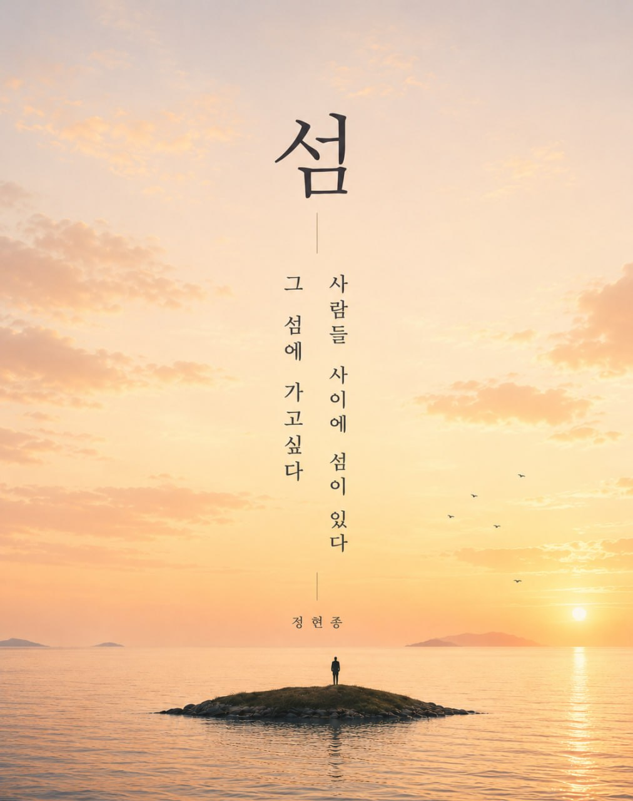

EDITORIAL MAGAZINE
Glit
삶이, 섬
삶이라는 섬 위에서, 나를 발견하다
— 나를 만나는 여정
화면을 넘겨주세요
혹시 이 작품 아시나요?
혹시 이 사진 아세요?
화면을 탭해보세요
거제 야호!
리센느
STEP 03 · 질문
최근에
가장 인상 깊었던
글귀나 문장이
있으세요?

STEP 05 · 우리
에디토리얼 매거진
글릿(Glit)
기획 · 작가 · 에디터 · PD · 매니저가 모여, 사람마다 가진 고유한 ‘섬’ — 그 사람만의 진정성을 찾는 작업을 합니다.
STEP 06 · 질문 1
나를
소개해 주세요
STEP 07 · 질문 2
사람을 볼 때
가장 중요하게
생각하는 것은?
- A성격
- B가치관
- C유머감각
- D첫인상
- E기타
STEP 08 · 질문 3
누군가 당신을
기억해 준다면
어떤 사람으로
남고 싶나요?
- A따뜻한 사람
- B용감한 사람
- C재미있는 사람
- D믿을 수 있는 사람
STEP 09 · 질문 4
요즘 가장
많이 하는
고민은?
- A진로
- B인간관계
- C돈
- D나 자신
STEP 10 · 질문 5
지금의 삶을
한 단어로
표현한다면?
- A도전
- B안정
- C변화
- D탐색
- E기타
STEP 11 · 제안
당신의 섬을
담아드릴게요.
- 01 평범한 사람들의 이야기를 매거진에 담습니다
- 02 포트폴리오 · 자기소개서 자료로 활용 가능
- 03 나만의 아이덴티티를 찾아가는 경험